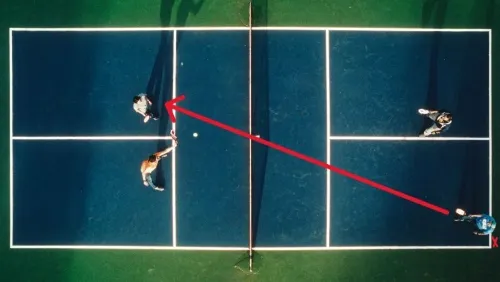
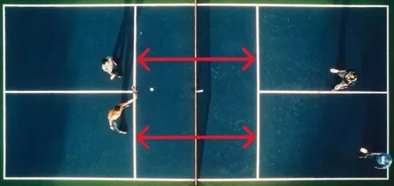

1. The Serve
Start behind the baseline and serve diagonally into the opposite service court. A traditional volley serve uses an upward motion with contact below the waist.

Pickleball 101
Every pickleball player starts somewhere! Whether you're learning how to serve or trying to understand the score, we've got you covered. Let's break down the basics.
Before stepping onto the court, there are a few important rules every beginner should know.
Start behind the baseline and serve diagonally into the opposite service court. A traditional volley serve uses an upward motion with contact below the waist.

The serve must bounce before being returned. The return must also bounce before the serving team hits it. After that, players may volley.
The kitchen is the non-volley zone, extending seven feet from the net on each side. You cannot volley the ball while standing in this zone.

Hitting the ball out of bounds, into the net, or allowing it to bounce twice are common faults that end a rally.
Pickleball scoring might sound complicated at first, but it gets easier with practice. Here's how traditional doubles scoring works.
In doubles, the score is called using three numbers:
4 - 2 - 1
This means the serving team has four points, the receiving team has two, and the first server is serving.
Think you've got the basics down? Take this quick quiz to see what you've learned.